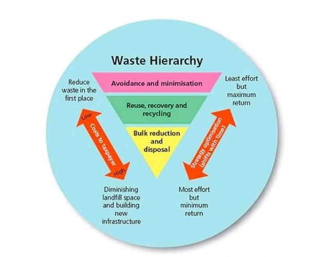
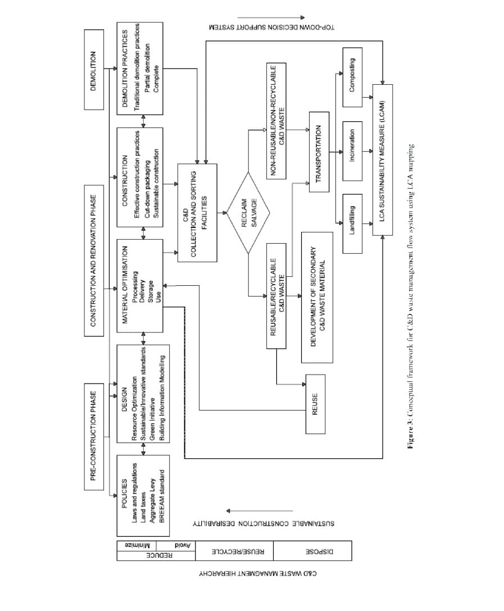

Innovative Solutions for Managing Construction and Demolition Waste
Introduction
The construction and demolition (C&D) industry plays a crucial role in global economic development, but it also generates a significant amount of waste that can have serious environmental and financial impacts. Traditional waste management practices often result in materials being sent to landfills, leading to resource depletion and environmental harm. However, with increasing awareness about sustainability, new and innovative solutions for managing C&D waste are transforming the industry.
These solutions aim to reduce, reuse, and recycle construction and demolition materials, minimizing waste and promoting a circular economy. From advanced recycling technologies and mobile crushing systems to waste-to-energy plants and sustainable building materials, innovative strategies are helping construction projects become more eco-friendly and cost-effective. These solutions not only reduce the environmental footprint of construction and demolition but also foster greater efficiency, reduce costs, and support the global shift towards more sustainable practices in the built environment.
As the demand for sustainable construction grows, adopting these innovative approaches is becoming essential for companies looking to stay ahead in the industry while contributing positively to environmental conservation. The following examples highlight some of the most effective and cutting-edge solutions being implemented worldwide.
What is C&D Waste?
C&D waste, or construction and demolition waste, includes materials such as concrete, wood, metals, glass, and plastics that are generated during construction, renovation, and demolition activities. Proper management of C&D waste is crucial for reducing environmental impact, conserving resources, and improving recycling and reuse of materials.
Green Initiative vs. Traditional Waste Management
There are clear distinctions for values derived from green initiative (sustainable C&D waste management) and the
system used in landfill disposal site (traditional waste management). Green initiative to managing C&D waste include
all forms of reducing, reusing, recycling as well as waste-to-energy projects. This idea seemed to conserve energy,
preserve natural resources and/or maximise waste reduction at its full potential. It is considered that most traditional
approach to reducing C&D waste is considered to be unsustainable as it lacks flexibility and long-term reliability. By
reducing the amount of waste being diverted to landfill the value of waste can be justified and re-evaluated in terms
oflong-term vision. There are also great opportunities found with reducing C&D waste such as best practices,
recognitions and award, high revenues generation and job creation. However, there is a need for green initiatives to be
re-evaluated in terms of new technologies and the provision of essential knowledge of logistics, operations and the
regulatory context.
Implementing 3R’s Principle
C&D waste management is required to be carried out after passing different stages. Figure below indicated the
various stages required for waste management based on hierarchical model as suggested by Peng et al. [18]. These
authors recommends that waste management should be executed by reducing, reusing and recycling of C&D waste.
However, certain events such as avoidance and minimisation, which further depicts the reduction, process alongside the
recycling operations, which are considered to be desirable. Waste management concept is guided by level of hierarchy
known as the 3R’s principle explained by El-Haggar in 2007 [19]. This model produces an integrated approach in
which options of waste management can be considered and thus serves as a systematic tool for those who generate and
manage waste [20].El-Haggar argued that when waste is being managed effectively it could generate various benefits through the whole life cycle of the waste from its generation to its end disposal [20]. Significantly, it is believed that
proper construction waste management will provide both economic and environmental benefits.

Figure : Waste Management Hierarchy Model Based on the 3R’s Principle.
Environmental Impact of 3Rs principle – Energy recovery
The application for 3Rs (reduce, reuse and recycle) principle is considered to have both economic and environmental
benefits. However, the underlying question is “how to do energy recovery by means of 3R principle?”. A new model
was developed in early 2011 for recovering energy based on 3Rs principle. It is clear that the 3R principle of
waste management hierarchy was introduced to fulfil its aim by providing the most preferred option to effectively and
sustainably managed waste. All construction and demolition processes such as designing, constructing often leads to
waste development and often managed by 3Rs principle, which is important to the ‘green initiative’ as provided for
sustainable construction. Energy is effectively recovered to this process with the intension to be beneficial to the
entire environment on a long term.
C&D Waste Statistics
According to recent reports, C&D waste constitutes approximately 30% of all global waste, with concrete and wood being the major contributors. Efficient management can significantly reduce landfill usage and pollution.
Types of C&D Waste
Concrete and Cement
Wood
Metals (steel, aluminum)
Glass
Plastics
Asphalt
More details about types of construction and demolition waste
Construction and demolition (C&D) materials are generated when new structures are built and when existing structures
are renovated or demolished.Structures include all residential and non-residential buildings, as well as public works
projects, such as road, bridges and dams [10]. Materials resulting from construction and demolition of buildings and
infrastructure constitute a significant amount (10-15%) of the total municipal solid waste stream [4].The UK generated
200 million tonnes of total waste in 2012. Half of this (50%) was generated by Construction, demolition, renovation
and refurbishment works. Commercial and industrial activities generated almost a quarter (24%), with households
responsible for a further 14%[11]. For the most part, construction wastes are largely slothful. The key challenge is that
construction waste is bulky, solid to compress and often occupies space in overstrained and confined municipal landfill
[8]. Reducing C&D waste is a priority for the European Union and the UK Government and there are many new
regulations, measures and targets to reduce waste within the construction industry [11].Figure 1 below shows both
construction and demolition waste composition at various stages in the UK in 2014. The key challenges with the
generation of large amount of C&D waste on many construction sites is to apply operations such as reuse and recycle
techniques which final leads provide sustainability in construction and demolition works and often led to the
development of new products.
Sustainable Approach – A pursuit for ‘green’ initiative
There had been a competitive race for sustainable development across the world, primarily in the construction industry.
Green initiative in construction was driving by the need for sustainable development. Since 2012, there have been
significant efforts to fulfil the sustainable approach to C&D waste by investing on “Halving C&D waste to Landfill”as implemented by the UK Sustainable Construction Strategy. This initiative sets a national target to “Zero C&D
waste” to landfill by 2020 as UK Government continue to embark on a long term ambition to end the disposal of C&D
waste in landfill as far as practicable. In order to meet the target set for 2020 national policy on waste management has
been strengthened by preparing for a more sustainable approach to reuse, recycle and other material recovery practices. Following the pursuit for green initiative, a number of fiscal and regulatory measures such as landfill taxes,
aggregate levy, Site Waste Management Plan, BREEAM standard (offering credit for diversion of C&D from landfill
75% by weight and 65% by volume) are already driving resource efficiency.
Life Cycle Assessment – A sustainable approach to C&D waste
On a broader perspective, environment impact and concern are considered for all waste products either solid or nonsolid waste and these forms a resource standpoint where waste hierarchy leads to the most resource-efficient and
environmentally sound choice and positive outcomes. Lifecycle assessment support decision-making in the field of
waste management and also helps to determine environmental viability. The LCA is a popular tool used to investigate
the potential environment impact, throughout a product’s life. The LCA methodology was first developed by ISO
standard by considering four phases, namely, goal and scope definition, inventory analysis, (input/output), impact
categories and interpretations. By analyzing the positive and negative environmental effects of all kids of projects or
products, LCA pose as a reliable tool considered for several areas to analyze and to evaluate different alternatives.
Huang et al. adopt LCA to evaluate environmental impacts of using recycled materials in asphalt pavements. The
authors evaluated relevant LCA model can be used a decision support tool for sustainable construction in the road
industry. Other relevant LCA studies on construction waste management as the study of Cherubini et al. discouraged the diversion of construction waste to landfill in relation to environmental impacts. The integration of
LCA in the construction sector as two perspectives building material and construction processes. These two
elements further relate to C&D waste management phases: pre-construction phase, construction and renovation as well
as demolition phase as indicated in figure below.

Conceptual Framework for C and D Waste Management Flow System Using LCA Mapping
Why Manage C&D Waste?
Effective management of C&D waste is essential for various reasons, including environmental, economic, and regulatory benefits. Below are some key reasons why managing C&D waste is important:
1. Environmental Impact
C&D waste constitutes a large portion of global waste, with some countries reporting up to 30-40% of total waste from construction and demolition activities. If improperly managed, C&D waste can contribute to pollution, landfills, and environmental degradation. Managing this waste reduces harmful impacts such as soil contamination, water pollution, and air pollution.
2. Resource Conservation
Many materials found in C&D waste, such as concrete, bricks, metals, and wood, can be recycled and reused, which conserves natural resources. By recycling materials like concrete and metals, we reduce the demand for new raw materials, thereby minimizing energy consumption and resource depletion. This also supports a circular economy where materials are reused rather than discarded.
3. Economic Benefits
Proper C&D waste management brings significant economic benefits. Recycling and reusing materials can lead to cost savings on purchasing new materials and waste disposal fees. Additionally, the C&D waste management sector creates new business opportunities and jobs in recycling facilities, waste sorting, and sustainable construction practices.
4. Regulatory Compliance
Many governments around the world have established stricter regulations regarding C&D waste management. Proper waste management ensures compliance with these regulations, which helps businesses avoid fines and penalties. It also contributes to green certifications such as LEED, which are increasingly important in the construction industry.
5. Sustainability Goals
Managing C&D waste effectively helps reduce the carbon footprint of the construction sector, which is a significant contributor to global emissions. By recycling and reusing materials, we can reduce energy consumption and greenhouse gas emissions associated with manufacturing and transportation. This also aligns with the United Nations Sustainable Development Goals (SDGs), promoting sustainable development in the construction industry.
6. Reducing Landfill Burden
Efficient C&D waste management can significantly reduce the amount of waste sent to landfills, helping to preserve valuable land and prevent further environmental damage. By diverting materials like concrete, metals, and wood from landfills, we reduce landfill use and promote more sustainable waste management practices.
In conclusion, managing C&D waste is crucial not only for minimizing environmental pollution but also for conserving resources, complying with regulations, reducing costs, and fostering economic opportunities. Sustainable waste management practices play a vital role in creating a greener, more resource-efficient future.
Innovative Solutions for C&D Waste Management
Innovations like mobile crushers, recycling machines, and smart technologies for sorting waste can drastically improve the recycling rate of C&D materials. Some companies are even experimenting with turning waste materials into valuable resources such as recycled aggregates for road construction.
In many cities worldwide, C&D waste management programs have led to successful recycling rates exceeding 70%.
Throughout the world, innovative solutions for managing Construction and Demolition (C&D) waste have emerged, showcasing the power of collaboration and advanced technology. These case studies highlight successful projects that have made a significant impact on reducing C&D waste, promoting recycling, and fostering sustainability. By examining these real-world examples, we can gain valuable insights into how diverse approaches can be applied to achieve more efficient, eco-friendly waste management in the construction industry.
Conduct waste audits before starting construction or demolition projects.
Prioritize the reuse of materials wherever possible.
Implement waste segregation at source.
Utilize recycled materials in new projects.
Collaboration and Stakeholders
Government bodies, construction firms, recycling companies, and waste management experts must collaborate to create sustainable systems for managing C&D waste effectively.
For detailed information on the collaboration and stakeholders involved in C&D waste management, visit the page:
Interactive Tools and Resources for Managing Construction and Demolition Waste
Explore Our Interactive Waste Calculator
Estimate your construction waste and find appropriate recycling options to reduce your environmental footprint. This tool will guide you through the process and suggest the best waste management strategies based on your project needs.
Click below to access the waste calculator and start managing your construction waste more efficiently.
We provide educational resources such as webinars, online courses, and guides on how to manage C&D waste sustainably. Check out our resource center for more information.
Resource Center
Visit our resource center for detailed articles, research papers, and case studies on best practices for C&D waste management.